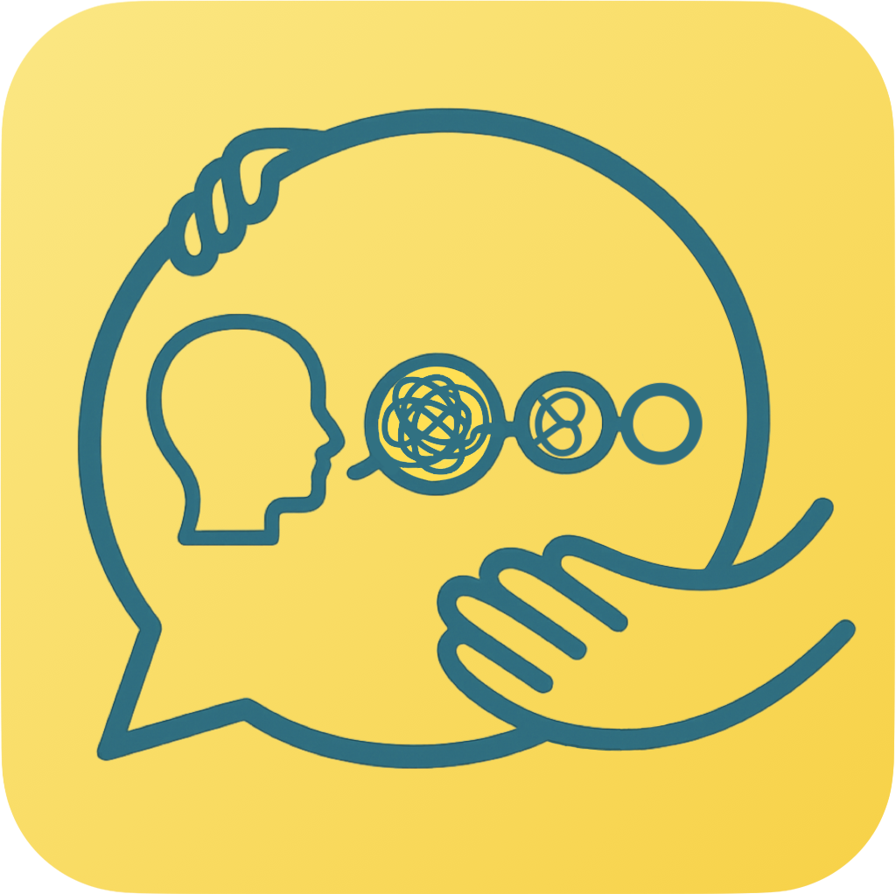
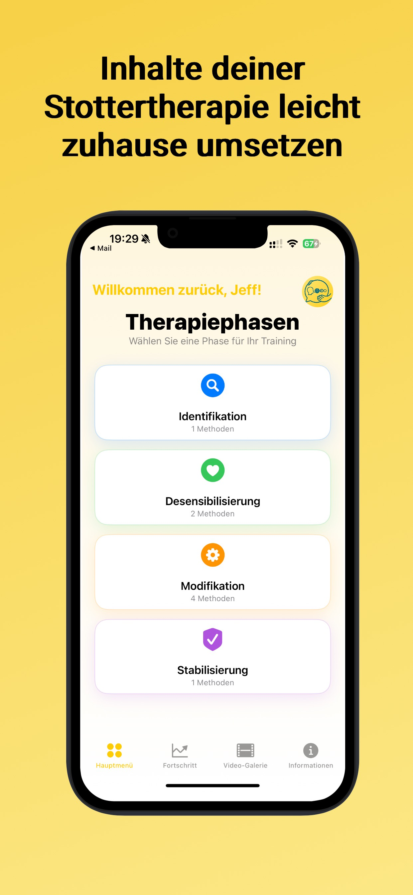
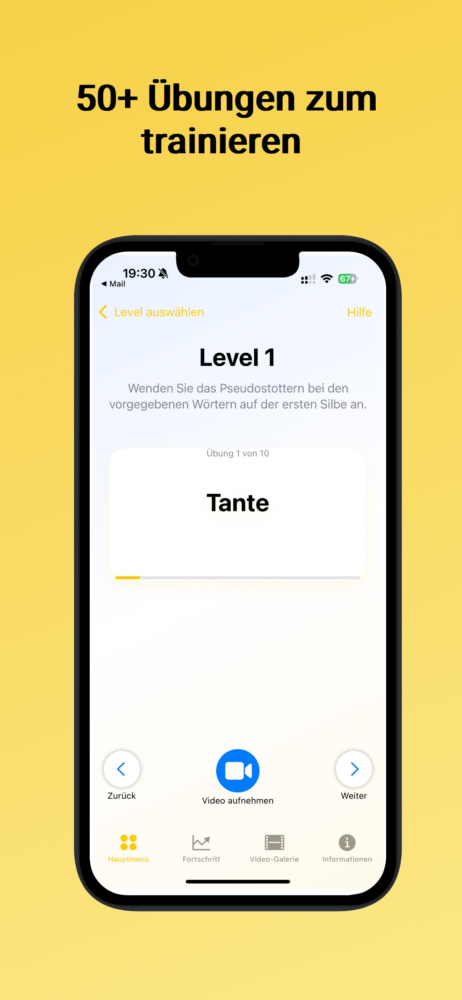
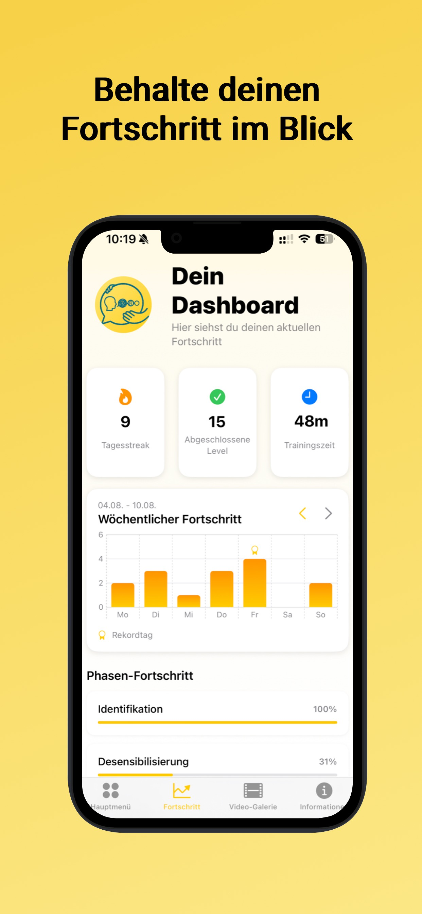
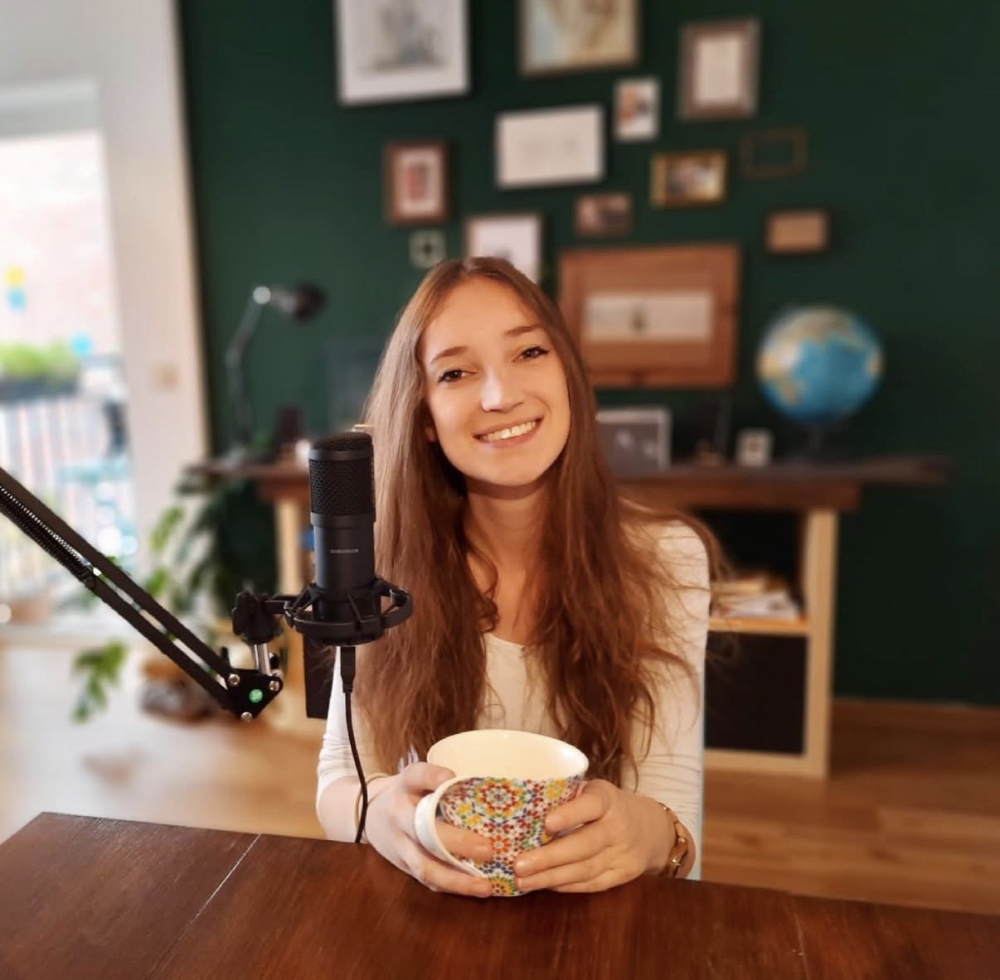

Kurze Alltagsgeschichten mit Lars
Sanfter Einstieg mit vertrauten Situationen, klaren Wiederholungen und kurzen Höreinheiten.
Offizielle Therapie-App
Die offizielle App zum Therapiematerial "Intensiv-Modifikation-Stottern" nach Hartmut Zückner unterstützt regelmäßiges Üben mit klaren Lernpfaden, Video-Feedback und nachvollziehbarem Fortschritt.
Verfügbar für iPhone, iPad und Android.




Kids
Familien, Kinder und Therapeutinnen sowie Therapeuten finden auf der Kids-Seite alle Hörspiele übersichtlich nach Alter und Schwerpunkt sortiert.
Auf der eigenen Unterseite können Kinder die Geschichten direkt anhören oder als Datei herunterladen. Die Karten sind visuell nach Altersgruppen farbcodiert.
Was die App kann
Behalte Übungszeit, Serien und abgeschlossene Lernschritte im Blick und erkenne deine Entwicklung über längere Zeiträume.
Trainiere entlang eines klaren Aufbaus aus Identifikation, Desensibilisierung, Modifikation und Stabilisierung.
Nutze Selbstaufnahmen, um Sprechtechniken bewusster wahrzunehmen und Fortschritte gezielter einzuordnen.
Über IMS Go
IMS Go ist eine App für Menschen, die stottern, und kann therapiebegleitend oder in der Nachsorge eingesetzt werden. Sie orientiert sich am Konzept "Intensiv-Modifikation Stottern" von Hartmut Zückner und umfasst mehr als 40 Übungen.
Für einen guten Transfer der Sprechtechniken ist das Üben außerhalb des Therapieraums entscheidend. IMS Go macht das Üben zuhause oder unterwegs verbindlicher, übersichtlicher und mit steigendem Schwierigkeitsgrad möglich.
Die App eignet sich nicht nur für die laufende Therapie, sondern auch zur Auffrischung bereits erlernter Techniken nach länger zurückliegender Stottertherapie.
Wer wir sind

Logopädin, M.Sc. und Co-Founder
Moin! Ich heiße Josephine und lebe in der wunderschönen Hafenstadt Hamburg! Zurzeit
arbeite ich als Logopädin und Lehrlogopädin für Redeflussstörungen.
Schon im Bachelorstudium in Aachen kam Jenny und mir die Idee, eine App für
Stotternde zu entwickeln. Im Rahmen meines Masters in Klinischer Linguistik konnten
wir diese Idee schließlich umsetzen! Ich freue mich sehr, die App nach drei Jahren
Entwicklung nun endlich präsentieren zu dürfen!
Logopädin, B.Sc. und Co-Founder
Hey, ich heiße Jenny, komme aus der schönen Kaiserstadt Aachen. Zurzeit arbeite
ich als Logopädin in Heppenheim. Mein duales Logopädiestudium habe ich an der RWTH
Aachen absolviert und mache berufsbegleitend ein Fernstudium zur diplomierten
Legasthenietrainerin.
Meine Aufgaben in unserem Dreierteam liegen vor allem im organisatorischen Bereich
und in der Verwaltung des Instagram-Accounts. Wir freuen uns immer über Fragen und
Anregungen.
Jetzt starten
Ideal für therapiebegleitendes Training, Nachsorge und die Auffrischung bereits erlernter Sprechtechniken.
Die App unterstützt die Therapie bei Stottern, ersetzt jedoch nicht die Beratung durch einen Arzt oder Therapeuten. Medizinische Entscheidungen sollten immer mit qualifizierten Fachpersonen abgestimmt werden.